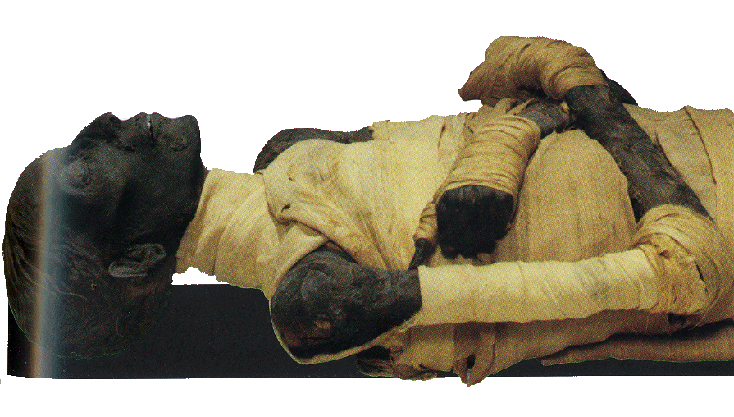

Mumie jsou fascinující součástí starověkého Egypta. Před více než 5000 lety, kolem roku 3600 př. n. l., začali Egypťané používat speciální postupy k uchování těl svých mrtvých. Těla byla ukládána do mělkých písečných hrobů, obvykle ve skrčené poloze, s hlavou na jih a tváří obrácenou na západ. K mrtvému se vkládaly předměty a nádoby s jídlem a pitím, protože Egypťané věřili, že i na onom světě bude zemřelý potřebovat různé věci pro pohodlný a šťastný život. Tento zvyk naznačuje, jak důležitá byla víra v posmrtný život pro starověké Egypťany.
S postupem času se mumifikace stala stále složitější a propracovanější. Tělo bylo nejprve pečlivě očištěno a odstraněny všechny vnitřní orgány. Ty se balzamovaly samostatně a uložily do speciálních nádobek zvaných kanopy. Poté bylo tělo vysušeno pomocí přírodní soli zvané natron, která pomohla zachovat jeho podobu. Po vysušení se tělo obalilo do mnoha vrstev plátna a mezi jednotlivé vrstvy se vkládaly amulety a magické texty pro ochranu v posmrtném životě. Celý proces balení trval asi 15 dní. Nakonec byla mumie umístěna do rakve, která mohla být jednoduchá nebo velmi zdobená, v závislosti na postavení zemřelého. Rakve, sarkofágy a masky často ukazovaly bohatství a význam zemřelého, a to jak v uměleckém, tak v praktickém smyslu. Kromě samotné mumie a rakve byly do hrobek často umisťovány různé předměty, které by mrtvý mohl potřebovat na cestě do posmrtného života, jako šperky, oblečení, jídlo, a někdy i figurky, které měly pomoci v posmrtné práci.